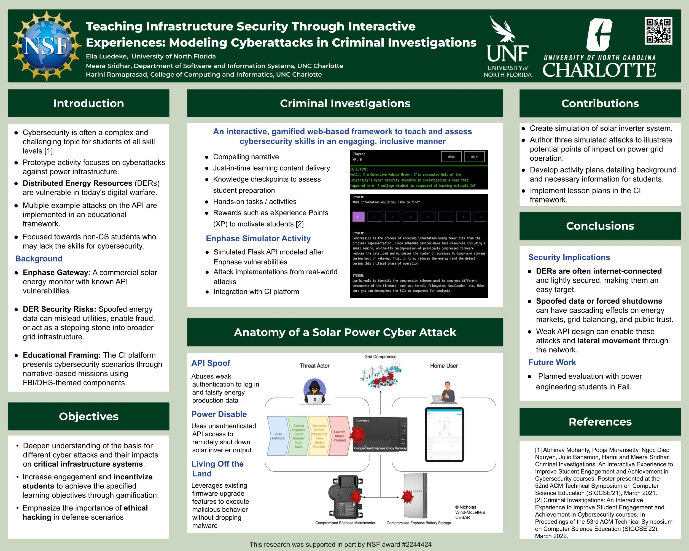

Automated Feedback Generation for Programming Courses
Wrote a research grant proposal using LaTeX to design a feedback generation system leveraging LLMs for automated code analysis in Data Structures courses and currently conducting the corresponding research.
Cyberattack Simulation for Power Grids
Created a cyber-physical simulation that models attacks on distributed energy systems such as solar inverters and EV chargers. The simulation uses realistic attack vectors like API spoofing and Living Off the Land attacks. Accepted to the 29th CISSE Conference & Journal.
Link to CISSE Abstract Github Repo Automated Misconception Detection for Physics Courses
Developed a Large Language Model pipeline submitted to EACL 2026 to analyze misconceptions in student learnings.